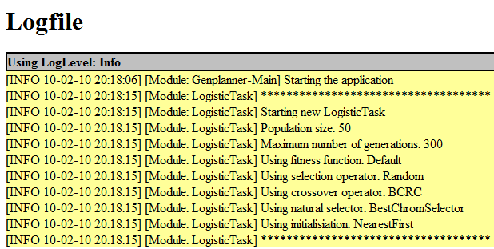

| Darstellungsformen :: Logdatei |
|
Während des Betriebes des Prototyps kann das System Nachrichten in die Logdatei schreiben. Bei den Nachrichten wird zwischen verschiedenen Typen unterschieden: Error, Warn, Info und Debug. Entsprechend der Einstellung in der Konfigurationsdatei (config.xml) werden nur gewisse Typen in die Logdatei geschrieben. Die Logdatei kann über das Menu aufgerufen werden: "Help->Logfile" (oder im Deutschen: "Hilfe->Logdatei").  Beispiel einer Logdatei mit verschiedenen Info-Nachrichten Die Logdatei wird im HTML-Format abgespeichert. Jeder Logtyp besitzt eine eigene Farbe und einen Zeitstempel des Eintrags. Neben der eigentlichen Meldung wird noch zusätzlich das Modul gespeichert, welches den Eintrag veranlasst hat. |